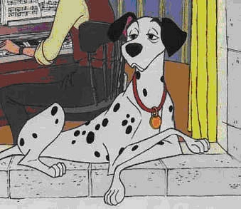
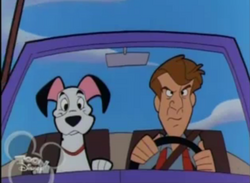
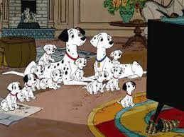

ПОНГО
Внешность
Внешне Понго типичный стройный далматинец. У него чёрные уши и стройное тело. Он носит красный ошейник.
Характер
Как и его владелец, Роджер, Понго непринужденный, игривый и немного глупый. Помимо этого, он чрезвычайно предан, и на самом деле принял к сведению одиночество Роджера как холостяка-песенника, тем самым сделав его своей миссией найти для своего "питомца" спутника жизни. Благодаря этому, Понго - причина, по которой Роджер и его жена, Анита, действительно собрались вместе. Это был пример любви Понго к Роджеру, и было показано, что они лучшие друзья, имеющие взаимопонимание друг с другом. Роджер ласково относится к Понго, как "Понго, ol' мальчик", а двое даже поделиться свой собственный танец, которым они занимаются, когда произошло нечто праздничное.
После браков Роджера и Аниты, Понго и Педди, далматинец мужского пола сохранил свою непринужденную натуру, хотя его веселая личность значительно снизилась после рождения его и пятнадцати щенков Педди. С их приходом Понго оставался игривым, но оказался ответственным и любящим отцом. Его дети, такие как патч и Пенни, особенно смотрели на своего отца и восхищались им. Любовь к своим детям был поставлен на испытания, когда вороватых Стеввеллой Де Виль созрел заговор, чтобы использовать их шкуры для шубы, в результате чего оба Понго и Педди пускается в опасное путешествие, чтобы спасти своих детей и других восьмидесяти четырех щенков держат в плену.
На протяжении всего приключения были продемонстрированы разные стороны личности Понго. Он показал себя умным, тактическим и скрытным. С его остроумием он легко смог перехитрить хитрую Стервеллу, и ее неуклюжего приспешника, почти безупречно, и с этими активами Понго и его семья смогли благополучно вернуться домой.
Понго в оригинальном мультфильме
В оригинальном фильме Понго - рассказчик. Наскучив холостяцкой жизни, Понго впервые видит, как он изо всех сил пытается найти своего хозяина (собаки называют их домашними животными) Роджера, подходящую жену. Пока что, пока Понго не увидит товарищей, которые подойдут и ему, и Роджеру. Женщина по имени Анита и ее любимица Далматин Пэдди. Понго заставляет Роджера следовать за ними в парк. Оказавшись там, Понго пытается привлечь их внимание, но это заканчивается очевидным провалом. Хотя это казалось ужасным, Роджер и Анита влюбляются, как Понго и Пэдди. Несколько месяцев спустя счастливые пары живут прямо в квартале от парка, также живя с В это время у Пэдди будут щенки, и Понго будет гордиться. В этот момент приходит школьный друг Аниты, Стервелла Де Виль.
Она быстро требует местонахождение щенков, но не раскрывает причину своего интереса к ним. Пэдди, зная, что женщина-чудовище, теперь беспокоится о самой идее иметь детей. В октябре щенки прибыли, к большому облегчению обеспокоенного Понго. Понго лижет Роджера счастливо, когда Роджер может оживить одного из щенков после его рождения. Стервелла де виль наносит еще один визит. Она первоначально отталкивается от щенков безупречной внешности, но успокаивается, как только она узнает, что щенки-далматинцы получат свои пятна через три недели после рождения. Она начинает выписывать чек на покупку щенков, а Понго и Роджер смотрят на нее. Роджер отказывается продавать щенков, разозлив Стервеллу. Стервелла яростно уходит после окончания ее дружбы с Анитой и утверждает, что она поквитается. Когда Стервелла ушла, Понго быстро сообщает отдыхающей Пэдди хорошие новости. Через несколько месяцев Понго и Пэдди счастливы, как никогда, с пятнадцатью замечательными щенками. Во время прогулки по парку двое хулиганов по имени Джаспер и Хорас ворвались в дом Роджера и Аниты и, поймав няню на чердаке, похитили щенков. Поняв, что люди мало надеются найти своих щенков, Понго использует Сумеречную кору, обычно сплетню, чтобы распространить новость о похищенных щенках собакам Лондона.
В конце концов новость доходит до полковника далеко в сельской местности. По словам его помощника сержанта Тиббса, лай щенка был слышен в старом особняке, который недавно был занят. Полковник и Тиббс отправляются на разведку, узнав, что Джаспер и Хорас работают на Стервеллу и что она планирует использовать мех щенков Понго и Пэдди, а также еще восемьдесят четыре, чтобы сделать пальто из собачьей кожи. Новости передаются обратно Понго и Пэдди, которые немедленно направляются в район, чтобы спасти своих щенков. Понго и Пэдди прибывают как раз вовремя, чтобы спасти своих щенков от Джаспера и Хораса. Узнав, что теперь есть девяносто девять щенков, Понго решает принять дополнительные, зная, что Роджер и Анита никогда не выпустят их. Далматинцы начинают пробираться домой с помощью нескольких собак. В то время как Пердита ведет щенков, Понго воспитывает сзади и ведет подсчет всех щенков. Стервелла узнает об их побеге и отправляется на охоту за собаками, заставляя далматинцев избегать их. В маленьком городке Динсфорд Лабрадор показывает группе, что грузовик направляется в Лондон, и там достаточно места для всей группы. Пердита беспокоится о том, как жить дальше, потому что Джаспер, Хорас и Стервелла бродят по городу. После некоторого вдохновения от Патч, которые сражались в соседней куче сажи, Понго вдохновлен, чтобы замаскировать всех как лабрадоров, катаясь в саже. Далматинцы едва могут сесть в грузовик, прежде чем он уедет, но их обнаруживают, когда видят Понго, везущего Лаки, чью маскировку смыл снег. Стервелла преследует их, но врезается в фургон Джаспера и Хораса, в конечном счете срывая ее планы. Вернувшись в Лондон, Роджер, Анита и няня оплакивают потерянных собак, но их встречает замечательный Рождественский подарок, когда Понго и другие прибывают. Роджер и Анита решают оставить себе остальных восьмидесяти четырех щенков и переехать в большую собственность в стране, давая далматинцам достаточно места, чтобы свободно бродить.
Понго с Роджером в Мультсериале
Понго появляется в мультсериале, но играет очень незначительную роль. Понго переехал на плантационную ферму вместе со своей семьей и взял на себя роль хорошего отца и лучшего друга Пита Роджера. Как показано в «Дьявольских собаках» и «Спреях и брызгах», он более расслаблен, чем Пердита, но в сериале он выглядит заметно менее озорным, как это видно в «Снежных баундерах» и «[[пища для размышлений]]».
Его понижение персонаж упоминается в "изготовление...", где он упоминает, что "продюсеры решили пойти на "более молодой" взгляд". Понго снялась в эпизодах "дом там, где кора", "псы Дьявола", "повезло один", "четыре истории", "ты говоришь это твой день рождения", "Повелитель термитов", "Радуйся к начальнику", "пища для размышлений", "скачать фильм Женщина", "Снежная границ", "Splishing и плещет", "не повезло", "изготовление...", "Animal House Party" и "Dalmatian Vacation, Part 2: Cross-Country Chaos".
Понго снова появляется в сиквеле фильма. Хотя он обеспечивает вступительное повествование, как он сделал в первом фильме, его роль сводится к второстепенной, как и в сериале. Сначала он появляется, когда Понго думает, что один из щенков чувствует себя потерянным. Как его сын Патч любит быть помощником Громобоя. Когда патч падает с лестницы, Понго спускается вниз и утешает его, чтобы насладиться жизнью на ферме. Понго случайно истинная причина патч чувствовал, как будто он был не более чем далматинский щенок (Понго говорил во сне, в то время как Патч задавал ему вопросы), Что побудило щенка уйти на поиски души путешествие. Понго изначально не знает об исчезновении своего сына, пока позже в фильме, когда он и Роджер прочитали газету и увидели фотографию Громобоя с Патчем на ней. Понго шокирован тем, что один из его собственных снова исчез, винит себя в том, что патч пропал, потому что он потерял счет, поскольку Пэдди говорит ему перестать винить себя. Он вместе с Пэдди, Роджером и Анитой возвращается в Лондон, чтобы найти его. В конце фильма, когда они это делают, он с радостью рассказывает своему сыну, как сильно они скучали по нему, и благодарит Громобоя за спасение его семьи.
Мышиный дом
Понго делает несколько эпизодических выступлений в серии в качестве гостя в клубе. Понго наиболее заметное появление делает в начале Деннис Дак, где в клубе устроили, черный и белый день, дань классическим черно-белым мультфильмам. Когда Микки Маус сообщает клубу о дани, Понго комментирует: "пришло время".